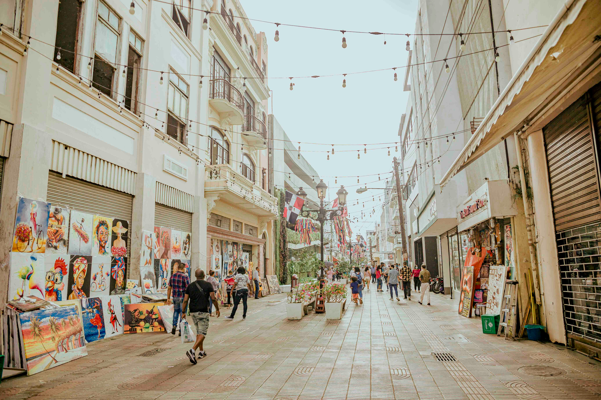
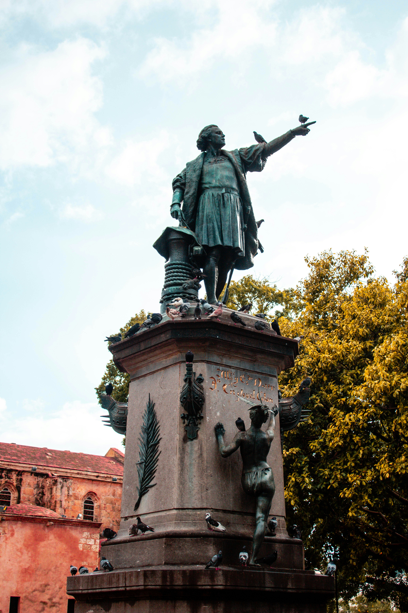
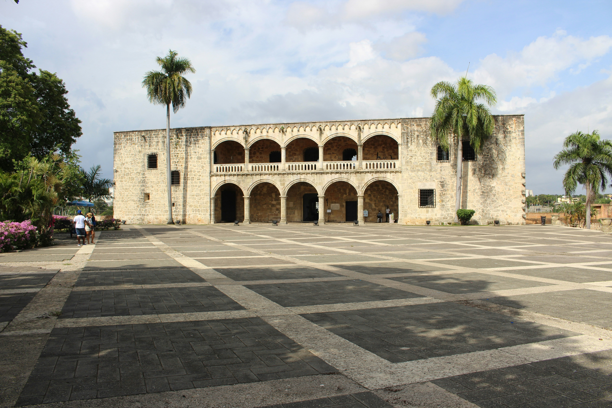
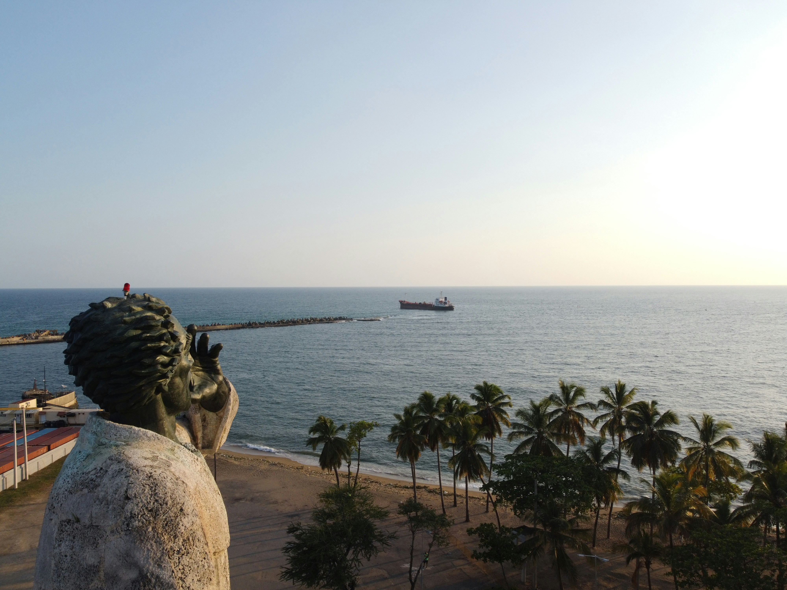
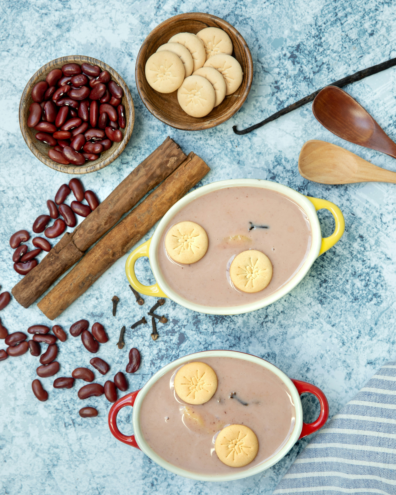

Step into History: The Colonial Zone
Cobbled streets, centuries-old buildings, and timeless charm — the Colonial Zone of Santo Domingo is where the New World began. Every corner tells a story.
Historic building

Lively colonial street
Historic plaza
Oldest cathedral in the New World

Residence of the Columbus family
Iconic monument on Santo Domingo
Places to see in Dominican Republic
From sun-soaked beaches to lush mountains and historic cities, the Dominican Republic is full of unforgettable places to explore. Whether you're into history, adventure, or just soaking up the Caribbean vibes — there's something here for everyone.
Bayahibe, La Romana
Bayahibe is a small beach town in La Romana, known for its crystal-clear waters and access to Saona Island.
Samaná, Chozas De Nipa
Traditional palm huts, similar to nipa huts, are a common sight in the rural and coastal regions of the Dominican Republic. These rustic structures are especially prevalent in areas like Samaná, where they blend naturally with the lush landscape and reflect the island’s deep-rooted cultural heritage.
Punta Cana
Punta Cana is a popular resort town in the Dominican Republic, famous for its white-sand beaches, luxury resorts, and vibrant nightlife
Constanza
Constanza is known for its cool climate, lush valleys, and breathtaking mountain landscapes.

Salto El Limón
Salto El Limón is a stunning 40-meter waterfall in Samaná, surrounded by lush tropical forest and accessible by hike or horseback.
Playa Grande
Playa Grande is a beautiful beach on the northern coast of the Dominican Republic, known for its golden sands, clear waters, and stunning surroundings.
Must-Try Dominican Activities
Dance to the rhythm of merengue and bachata, play a lively game of dominoes with locals, enjoy a traditional plate of mangú, or sip strong Dominican coffee in the morning sun. These simple, joyful moments are part of everyday life — and the best way to truly experience the heart of the island.
Dominoes: A Local Favorite
Dominoes is more than just a game — it’s a cultural tradition. Friends and families gather around the table to play, laugh, and share stories.
Dance Merengue
Feel the rhythm of the island and dance to the beat of merengue, a lively and infectious dance that embodies Dominican culture.
Habichuelas con dulce
Traditionally enjoyed during Easter, it’s a unique treat that blends history, flavor, and culture in every spoonful.